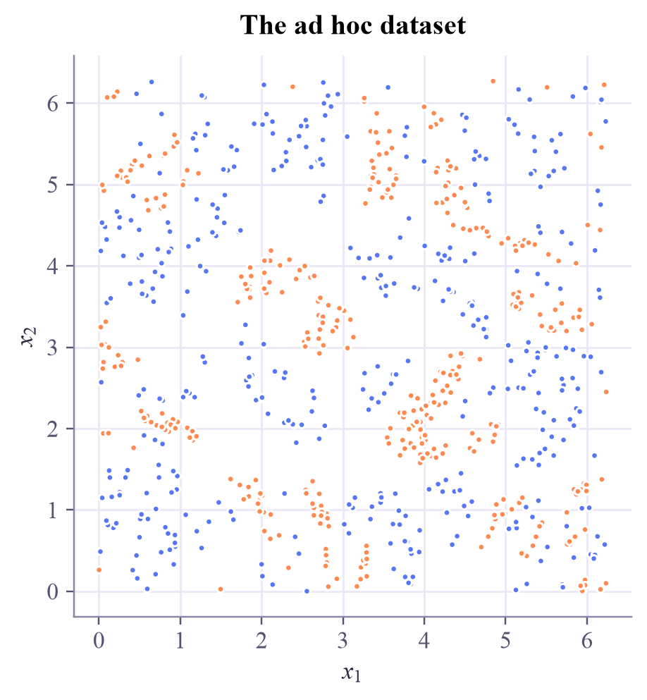

Quantum Machine Learning
 about 15 min
about 15 min qml-w4d4.ipynb
qml-w4d4.ipynb
How to read a QML paper
Turn four weeks of lessons into a reading checklist: find the claim, test it against the evidence, and reproduce a famous result to see what it does and doesn't show.
In this lesson you will
- Read a paper in three passes: the claim, the setup, the reproduction
- Check a QML claim against this tutorial: protocol, baselines, selection, shots and noise, scale, simulability and cost
- Reproduce a published quantum-kernel result at small scale, and say what it shows
Warm-up
1 minResearch is mostly reading

Research starts with reading, and QML papers are full of bold words: advantage, speedup, enhanced. After four weeks you have the tools to check them. This lesson turns the whole tutorial into a reading checklist, then lets you put a famous claim to the test.
Big idea
4 minThree passes and a checklist
Three passes.
- Five minutes: title, abstract, figures, conclusion. What exactly is claimed: higher accuracy, fewer samples, less time, something new? Which corner of week 1's map: classical data or quantum data?
- An hour: the setup. Which data, which model, which baselines, which protocol?
- A day: could you reproduce it? A small reproduction catches most problems.
The checklist. Every item is a lesson you've done:
- Protocol: preprocessing fitted on the training part, several splits with their spread, the test set touched once (week 2).
- Baselines: a strong, equally tuned classical model on the same features (weeks 2 and 3).
- Selection: how many models, datasets and settings were tried before the reported one? Remember the winner's curse (week 2).
- Shots and noise: exact simulation, shots or hardware? Margins shrink and gradients fade (weeks 3 and 4).
- Scale: what happens with more qubits? Think of concentration and barren plateaus (week 2, QC week 7).
- Simulability: could a classical surrogate imitate the model (week 4)?
- Cost: circuit runs and shots, not parameter counts (week 3).
- The data: built to suit the model, or taken from the world? (today's reproduction)
Find the claim, then check it against the evidence: protocol, baselines, selection, shots and noise, scale, simulability, cost, and where the data came from.
Play
3 minRead like a referee
An invented abstract, but every phrase in it is typical. Tap the phrases that should make a careful reader ask a question.
Try this
Find all eight red flags before pressing Show all. For each one, ask what experiment would settle it. Then look at the two phrases that are fine: what makes them fine?
Code
3 minReproduce a famous claim
Havlíček and coauthors (Nature, 2019) introduced the ZZ feature map you've used since week 1, and showed a quantum kernel classifying an "ad hoc" dataset. Its labels come from encoding each point with the ZZ map, applying a fixed random unitary and measuring the parity . Rebuild it on two qubits and test the claim with this tutorial's protocol.
The notebook for this lessonEvery code cell below, with what it printed, is in
qml-w4d4.ipynb. To change the code and run it yourself, open the notebook in Google Colab (free, in your browser) or download it for your own Jupyter.import numpy as np
import matplotlib.pyplot as plt
from qiskit import QuantumCircuit
from qiskit.quantum_info import Statevector, random_unitary
from sklearn.svm import SVC
from sklearn.model_selection import GridSearchCV
def zz_map(x, reps=2):
"""The ZZ feature map of weeks 1 and 2, on two qubits."""
qc = QuantumCircuit(2)
for _ in range(reps):
qc.h([0, 1])
qc.p(2 * x[0], 0)
qc.p(2 * x[1], 1)
qc.cx(0, 1)
qc.p(2 * (np.pi - x[0]) * (np.pi - x[1]), 1)
qc.cx(0, 1)
return qc
# The paper's recipe: label a point by the parity Z⊗Z of its encoded state after a fixed random unitary V,
# and drop points whose value is within a gap of 0.3 of zero.
V = random_unitary(4, seed=7).data
parity = V.conj().T @ np.kron(np.diag([1, -1]), np.diag([1, -1])) @ V
def label_value(x):
s = Statevector(zz_map(x)).data
return np.real(s.conj() @ parity @ s)
def ad_hoc(n_per_class, seed, gap=0.3):
rng = np.random.default_rng(seed)
X, y = [], []
while min(y.count(0), y.count(1)) < n_per_class:
x = rng.uniform(0, 2 * np.pi, 2)
v = label_value(x)
c = int(v > 0)
if abs(v) >= gap and y.count(c) < n_per_class:
X.append(x)
y.append(c)
return np.array(X), np.array(y)
X_all, y_all = ad_hoc(400, seed=0) # 800 points, half of each class
fig, ax = plt.subplots(figsize=(4.6, 4.4), layout="constrained")
ax.scatter(X_all[:, 0], X_all[:, 1], c=np.where(y_all == 0, "#ff8a50", "#5577f5"), s=10)
ax.set_xlabel(r"$x_1$")
ax.set_ylabel(r"$x_2$")
ax.set_title("The ad hoc dataset")
ax.set_aspect("equal")
plt.show()What it printed in the notebook
def kernel_matrix(fmap, A, B):
SA = np.array([Statevector(fmap(a)).data for a in A])
SB = np.array([Statevector(fmap(b)).data for b in B])
return np.abs(SA.conj() @ SB.T) ** 2
K_all = kernel_matrix(zz_map, X_all, X_all)
def compare(K, sizes=(20, 40, 80, 160, 320), repeats=5):
rows = {}
for n in sizes:
q, c = [], []
for seed in range(repeats):
idx = np.random.default_rng(seed).permutation(len(X_all))
tr, te = idx[:n], idx[n:n + 400]
folds = min(5, np.bincount(y_all[tr], minlength=2).min())
qs = GridSearchCV(SVC(kernel="precomputed"), {"C": [0.1, 1, 10, 100, 1000]}, cv=folds).fit(K[np.ix_(tr, tr)], y_all[tr])
q.append(qs.score(K[np.ix_(te, tr)], y_all[te]))
cs = GridSearchCV(SVC(kernel="rbf"), {"C": [0.1, 1, 10, 100, 1000], "gamma": [0.01, 0.1, 1, 10]}, cv=folds).fit(X_all[tr], y_all[tr])
c.append(cs.score(X_all[te], y_all[te]))
rows[n] = (np.mean(q), np.std(q), np.mean(c), np.std(c))
print(f"{n:3d} training points: quantum kernel {np.mean(q):.3f} ± {np.std(q):.3f} tuned RBF {np.mean(c):.3f} ± {np.std(c):.3f}")
return rows
print("guessing the majority class: 0.500")
results = compare(K_all)What it printed in the notebook
guessing the majority class: 0.500 20 training points: quantum kernel 0.934 ± 0.029 tuned RBF 0.520 ± 0.032 40 training points: quantum kernel 0.972 ± 0.028 tuned RBF 0.624 ± 0.044 80 training points: quantum kernel 1.000 ± 0.000 tuned RBF 0.756 ± 0.023 160 training points: quantum kernel 1.000 ± 0.000 tuned RBF 0.850 ± 0.022 320 training points: quantum kernel 1.000 ± 0.001 tuned RBF 0.888 ± 0.007
The claim holds. With 20 training points the quantum kernel scores 93%, while a tuned RBF kernel barely beats a coin flip; from 80 points on, the quantum kernel is perfect. Now read it like a referee. The labels were generated by the very feature map the kernel uses, a perfect prior that real data rarely hand you. At two qubits, the "quantum" kernel ran on a laptop in milliseconds. The paper's real argument is about scale: with many qubits, kernels like this are believed to be hard to compute classically. So the experiment shows that a kernel matched to the data learns from few examples, not that quantum computers classify real data better.
Your turn
2 minYour turn: the quantumness, or the match?
Swap in a different quantum feature map, the ZZ map with one layer or the angle map, and rerun the comparison. How much of the edge survives?
def angle_map(x):
qc = QuantumCircuit(2)
qc.ry(x[0], 0)
qc.ry(x[1], 1)
return qc
# TODO: build kernel_matrix(lambda x: zz_map(x, reps=1), X_all, X_all) and kernel_matrix(angle_map, X_all, X_all),
# and run compare(...) with eachNeed a hint?
kernel_matrix(lambda x: zz_map(x, reps=1), X_all, X_all) builds the one-layer kernel; pass it to compare. Do the same with angle_map.
Show a solution
def angle_map(x):
qc = QuantumCircuit(2)
qc.ry(x[0], 0)
qc.ry(x[1], 1)
return qc
for name, fmap in (("ZZ map, 1 layer", lambda x: zz_map(x, reps=1)), ("angle map", angle_map)):
print(name)
compare(kernel_matrix(fmap, X_all, X_all), sizes=(40, 160, 320))
print("The one-layer ZZ map, a close relative of the map that made the labels, keeps part of the edge with few points")
print("and falls to the RBF's level with more; the unrelated angle map is worse than the RBF at every size.")
print("The advantage came from matching how the labels were made, not from quantumness as such.")What it printed in the notebook
ZZ map, 1 layer 40 training points: quantum kernel 0.824 ± 0.022 tuned RBF 0.624 ± 0.044 160 training points: quantum kernel 0.884 ± 0.011 tuned RBF 0.850 ± 0.022 320 training points: quantum kernel 0.877 ± 0.005 tuned RBF 0.888 ± 0.007 angle map 40 training points: quantum kernel 0.540 ± 0.039 tuned RBF 0.624 ± 0.044 160 training points: quantum kernel 0.539 ± 0.038 tuned RBF 0.850 ± 0.022 320 training points: quantum kernel 0.567 ± 0.024 tuned RBF 0.888 ± 0.007 The one-layer ZZ map, a close relative of the map that made the labels, keeps part of the edge with few points and falls to the RBF's level with more; the unrelated angle map is worse than the RBF at every size. The advantage came from matching how the labels were made, not from quantumness as such.
The one-layer ZZ map, a close relative of the map that made the labels, keeps part of the edge with few points and falls to the RBF's level with more. The unrelated angle map is worse than the RBF at every size. The edge belongs to the match between kernel and data, which is exactly the question to ask of any real dataset.
Check yourself
1 minQuick check
Question 1 of 3
An abstract says the hyperparameters were chosen to maximize test accuracy. What does that do to the reported number?
Question 2 of 3
A quantum kernel beats classical kernels on data generated from its own feature map. What does that show?
Question 3 of 3
Which of these is the strongest evidence that a quantum model is useful?
Wrap-up
1 minToday in one sentence
Research link
The debate Havlíček's paper started is still open: do real-world data have the structure quantum kernels need? One answer is to build problems where an advantage can be proven. Liu, Arunachalam and Temme (2021) constructed a classification task, based on the discrete logarithm, that a quantum kernel learns efficiently and no classical algorithm can, if a standard cryptographic assumption holds. Others look for that structure in quantum data, as in week 4.
Go deeper (optional)
Keshav, "How to read a paper" (ACM SIGCOMM Computer Communication Review, 2007), the three-pass method. Havlíček and coauthors, "Supervised learning with quantum-enhanced feature spaces" (Nature, 2019). Liu, Arunachalam and Temme, "A rigorous and robust quantum speed-up in supervised machine learning" (Nature Physics, 2021). Cerezo and coauthors, "Challenges and opportunities in quantum machine learning" (Nature Computational Science, 2022).
Tomorrow: the capstone, a mini-study of your own.

That's the lesson!
Tap the button to save it. Short and steady wins.
Marked by mistake? Undo